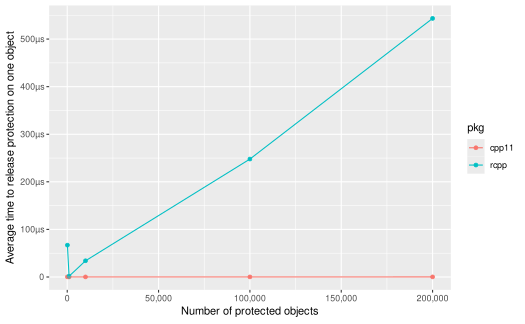
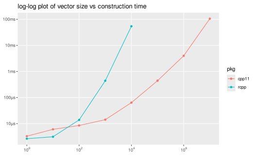

Motivations
R and S have a long history of interacting with compiled languages.
In fact the original version of S written in the late 1970s was mainly a
wrapper around FORTRAN routines. (History-of-S)
Released in 2000, the cxx package was an
early prototype of C++ bindings to R. Rcpp was first
published to CRAN in 2008, and Rcpp11 in 2014. Of
these Rcpp has by far the widest adoption, with over 2000
reverse dependencies as of 2020.
Rcpp has been a widely successful project, however over the years a number of issues and additional C++ features have arisen. Adding these features to Rcpp would require a great deal of work, or in some cases would be impossible without severely breaking backwards compatibility.
cpp11 is a ground up rewrite of C++ bindings to R with different design trade-offs and features.
Changes that motivated cpp11 include:
- Enforcing copy-on-write semantics.
- Improving the safety of using the R API from C++ code.
- Supporting ALTREP objects.
- Using UTF-8 strings everywhere.
- Applying newer C++11 features.
- Having a more straightforward, simpler implementation.
- Faster compilation time with lower memory requirements.
- Being completely header only to avoid ABI issues.
- Capable of vendoring if desired.
- More robust protection using a much more efficient linked list data structure.
- Growing vectors more efficiently.
Copy-on-write semantics
R uses copy-on-write
(also called copy-on-modify) semantics. Lets say you have two variables
x and y that both point to the same underlying
data.
x <- c(1, 2, 3)
y <- xIf you modify y, R will first copy the values of
x to a new position, then point y to the new
location and only after the copy modify y. This allows
x to retain the original values.
y[[3]] <- 4
y
#> [1] 1 2 4
x
#> [1] 1 2 3C++ does not have copy-on-write built into the language, however it has related concepts, copy-by-value and copy-by-reference. Copy-by-value works similarly to R, except that R only copies when something is changed, C++ always copies.
int x = 42;
int y = x;
y = 0;
// x is still == 42Copy-by-reference does the opposite, both x and
y always point to the same underlying value. In
C++ you specify a reference with &.
int x = 42;
int &y = x;
y = 0;
// both x and y are now 0Copy-by-reference is a valuable technique, as it avoids the overhead of copying the data. However it can also lead to errors when internal functions change their inputs unexpectedly. Rcpp uses copy-by-reference by default (even if you pass a Rcpp vector class by value). This gives Rcpp functions completely different semantics from normal R functions.
We can illustrate this by creating a Rcpp function that multiples its input vector by 2.
#include "Rcpp.h"
using namespace Rcpp;
// [[Rcpp::export]]
NumericVector times_two_rcpp(NumericVector x) {
for (int i = 0; i < x.size(); ++i) {
x[i] = x[i] * 2;
}
return x;
}If you do this with regular R functions, you will see the value of
y is x * 2, but the value of x is
unchanged.
x <- c(1, 2, 3)
y <- x * 2
y
#> [1] 2 4 6
x
#> [1] 1 2 3However if we now call our times_two_rcpp() function we
get the right output value, but now x is also
changed.
z <- times_two_rcpp(x)
z
#> [1] 2 4 6
x
#> [1] 2 4 6cpp11 strives to make its functions behave similarly to normal R functions, while preserving the speed of Rcpp when read only access is needed. Each of the r_vector classes in cpp11 has a normal read only version that uses copy-by-reference, and a writable version which uses copy-by-value.
#include "cpp11/doubles.hpp"
[[cpp11::register]]
cpp11::doubles times_two_cpp11(cpp11::writable::doubles x) {
for (int i = 0; i < x.size(); ++i) {
x[i] = x[i] * 2;
}
return x;
}Using cpp11::writable::doubles first copies the
input vector, so when we do the multiplication we do not modify the
original data.
x <- c(1, 2, 3)
z <- times_two_cpp11(x)
z
#> [1] 2 4 6
x
#> [1] 1 2 3Improve safety
Internally R is written in C, not C++. In general C and C++ work well together, a large part of C++’s success is due to its high interoperability with C code. However one area in which C and C++ are generally not interoperable is error handling. In C++ the most common way to handle errors is with exceptions.
Exceptions provide a clean, safe way for objects to obtain and cleanup resources automatically even when errors occur.
C safety
The C language does not have support for exceptions, so error handling is done a variety of ways. These include error codes like errno, conditional statements, and in the R codebase the longjmp function.
longjmp, which stands for ‘long jump’ is a function that
allows you to transfer the control flow of a program to another location
elsewhere in the program. R uses long jumps extensively in its error
handling routines. If an R function is executing and an error occurs, a
long jump is called which ‘jumps’ the control flow into the error
handling code.
Crucially long jumps are incompatible with C++ destructors. If a long jump occurs the destructors of any active C++ objects are not run, and therefore any resources (such as memory, file handles, etc.) managed by those objects will cause a resource leak.
For example, the following unsafe code would leak the memory
allocated in the C++ std::vector x when the R
API function Rf_allocVector() fails (since you can’t create
a vector of -1 size).
std::vector<double> x({1., 2., 3.});
SEXP y = PROTECT(Rf_allocVector(REALSXP, -1));cpp11 provides two mechanisms to make interfacing with Rs C API and
C++ code safer. cpp11::unwind_protect() takes a functional
object (a C++11 lamdba function or std::function) and
converts any C long jumps encountered to C++ exceptions. Now instead of
a C long jump happening when the Rf_allocVector() call
fails, a C++ exception occurs, which does trigger the
std::vector destructor, so that memory is automatically
released.
std::vector<double> x({1., 2., 3.});
SEXP y;
unwind_protect([]() {
y = Rf_allocVector(REALSXP, -1);
})cpp11::safe() is a more concise way to wrap a particular
R API function with unwind_protect().
std::vector<double> x({1., 2., 3.});
SEXP y = PROTECT(safe[Rf_allocVector](REALSXP, -1));Again using cpp11::safe() converts the C long jump to a
C++ exception, so the memory is automatically released.
cpp11 uses these mechanisms extensively internally when calling the R C API, which make cpp11 much safer against resource leaks than using Rcpp or calling Rs C API by hand.
C++ safety
In the inverse of C safety we also need to ensure that C++ exceptions
do not reach the C call stack, as they will terminate R if that occurs.
Like Rcpp, cpp11 automatically generates try / catch guards
around registered functions to prevent this and also converts C++
exceptions into normal R errors. This is done without developer facing
code changes.
With both C and C++ sides of the coin covered we can safely use R’s C API and C++ code together with C++ objects without leaking resources.
Altrep support
ALTREP
which stands for ALTernative
REPresntations is a feature introduced in R 3.5. ALTREP
allows R internals and package authors to define alternative ways of
representing data to R. One example of the use of altrep is the
: operator.
Prior to R 3.5 : generated a full vector for the entire
sequence. e.g. 1:1000 would require 1000 individual values.
As of R 3.5 this sequence is instead represented by an ALTREP vector, so
none of the values actually exist in memory. Instead each time
R access a particular value in the sequence that value is computed
on-the-fly. This saves memory and excution time, and allows users to use
sequences which would otherwise be too big to fit in memory.
1:1e9
#> [1] 1 2 3 4 5 6 7 8 9 10 11 12 13 14 15 16 17 18 19 20
#> [ reached getOption("max.print") -- omitted 999999980 entries ]Because Rcpp predates the introduction of ALTREP, it does not support the interfaces needed to access ALTREP objects. This means the objects must be converted to normal R objects as soon as they are used by Rcpp.
#include "Rcpp.h"
// [[Rcpp::export]]
Rcpp::IntegerVector identity_rcpp(Rcpp::IntegerVector x) {
return x;
}
x <- identity_rcpp(1:100000)
lobstr::obj_size(x)
#> 400.73 kBWhereas cpp11 objects preserve the ALTREP object.
#include "cpp11/integers.hpp"
[[cpp11::register]]
cpp11::integers identity_cpp11(cpp11::integers x) {
return x;
}
y <- identity_cpp11(1:100000)
lobstr::obj_size(y)
#> 680 BAltrep benchmarks
In these benchmarks note that Rcpp allocates memory for the ALTREP vectors. This is because Rcpp implicitly converts them into normal R vectors. cpp11 retains them as ALTREP vectors, so no additional memory is needed.
foreach and accumulate both use iterators
that take advantage of REAL_GET_REGION to buffer queries.
This makes them faster than naive C-style for loops with ALTREP
vectors.
The for2 case shows an optimization you can use if you know at
compile-time that you won’t be dealing with ALTREP vectors. By
specifying false to the second argument
(is_altrep), you can disable the ALTREP support. This
causes the ALTREP conditional code to be compiled out resulting in loop
unrolling (and speeds) identical to that generated by Rcpp.
library(cpp11test)
cases <- expand.grid(
len = 3e6,
vector = c("normal", "altrep"),
method = c("for", "foreach", "accumulate"),
pkg = c("cpp11", "rcpp"),
stringsAsFactors = FALSE
)
# Add special case
cases <- rbind(list(len = 3e6, vector = "normal", method = "for2", pkg = "cpp11"), cases)
b_sum <- bench::press(
.grid = cases,
{
seq_real <- function(x) as.numeric(seq_len(x))
funs <- c("normal" = rnorm, "altrep" = seq_real)
x <- funs[[vector]](len)
fun <- match.fun(sprintf("%ssum_dbl_%s_", ifelse(pkg == "cpp11", "", paste0(pkg, "_")), method))
bench::mark(
fun(x)
)
}
)[c("pkg", "method", "vector", "min", "median", "mem_alloc", "itr/sec", "n_gc")]
saveRDS(b_sum, "sum.Rds", version = 2)| pkg | method | vector | min | median | mem_alloc | itr/sec | n_gc |
|---|---|---|---|---|---|---|---|
| cpp11 | for2 | normal | 0.003008334 | 0.003208736 | 0 | 302.9364 | 0 |
| cpp11 | for | normal | 0.002929285 | 0.003088721 | 0 | 319.9100 | 0 |
| cpp11 | for | altrep | 0.008089832 | 0.008442934 | 0 | 117.0562 | 0 |
| cpp11 | foreach | normal | 0.002966348 | 0.003361415 | 0 | 292.8306 | 0 |
| cpp11 | foreach | altrep | 0.004017410 | 0.004184819 | 0 | 236.2339 | 0 |
| cpp11 | accumulate | normal | 0.003033590 | 0.003241419 | 0 | 303.3408 | 0 |
| cpp11 | accumulate | altrep | 0.004067195 | 0.004311647 | 0 | 225.8066 | 0 |
| rcpp | for | normal | 0.002807784 | 0.003127156 | 0 | 311.3724 | 0 |
| rcpp | for | altrep | 0.002805196 | 0.003131571 | 24000048 | 311.6365 | 0 |
| rcpp | foreach | normal | 0.002928401 | 0.003462064 | 0 | 293.9831 | 0 |
| rcpp | foreach | altrep | 0.002810107 | 0.003068041 | 24000048 | 313.6250 | 0 |
| rcpp | accumulate | normal | 0.002803584 | 0.003006378 | 0 | 321.6647 | 0 |
| rcpp | accumulate | altrep | 0.002750792 | 0.003000370 | 24000048 | 322.9292 | 0 |
cpp11test/src/sum.cpp contains the code ran in these benchmarks.
UTF-8 everywhere
R has complicated support for Unicode strings and non-ASCII code pages, whose behavior often differs substantially on different operating systems, particularly Windows. Correctly dealing with this is challenging and often feels like whack a mole.
To combat this complexity cpp11 uses the UTF-8 everywhere philosophy. This means that whenever text data is converted from R data structures to C++ data structures by cpp11 the data is translated into UTF-8. Conversely any text data coming from C++ code is assumed to be UTF-8 and marked as such for R. Doing this universally avoids many locale specific issues when dealing with Unicode text.
Concretely cpp11 always uses Rf_translateCharUTF8() when
obtaining const char* from CHRSXP objects and
uses Rf_mkCharCE(, CE_UTF8) when creating new
CHRSXP objects from const char* inputs.
C++11 features
C++11 provides a host of new features to the C++ language. cpp11 uses a number of these including
Simpler implementation
Rcpp is very ambitious, with a number of advanced features, including modules, sugar and extensive support for attributes. While these are useful features, many R packages do not use one or any of these advanced features. In addition the code needed to support these features is complex and can be challenging to maintain.
cpp11 takes a more limited scope, providing only the set of r_vector wrappers for R vector types, coercion methods to and from C++ and the limited attributes necessary to support use in R packages.
This limited scope allows the implementation to be much simpler, the headers in Rcpp 1.0.4 have 74,658 lines of code (excluding blank or commented lines) in 379 files. Some headers in Rcpp are automatically generated, removing these still gives you 25,249 lines of code in 357 files. In contrast the headers in cpp11 contain only 1,734 lines of code in 19 files.
This reduction in complexity should make cpp11 an easier project to maintain and ensure correctness, particularly around interactions with the R garbage collector.
Compilation speed
Rcpp always bundles all of its headers together, which causes slow compilation times and high peak memory usage when compiling. The headers in cpp11 are more easily decoupled, so you only can include only the particular headers you actually use in a source file. This can significantly improve the compilation speed and memory usage to compile your package.
Here are some real examples of the reduction in compile time and peak memory usage after converting packages to cpp11.
| package | Rcpp compile time | cpp11 compile time | Rcpp peak memory | cpp11 peak memory | Rcpp commit | cpp11 commit |
|---|---|---|---|---|---|---|
| haven | 17.42s | 7.13s | 428MB | 204MB | a3cf75a4 | 978cb034 |
| readr | 124.13s | 81.08s | 969MB | 684MB | ec0d8989 | aa89ff72 |
| roxygen2 | 17.34s | 4.24s | 371MB | 109MB | 6f081b75 | e8e1e22d |
| tidyr | 14.25s | 3.34s | 363MB | 83MB | 3899ed51 | 60f7c7d4 |
Header only
Rcpp has long been a mostly header only library, however is not a completely header only library. There have been cases when a package was first installed with version X of Rcpp, and then a newer version of Rcpp was later installed. Then when the original package X was loaded R would crash, because the Application Binary Interface of Rcpp had changed between the two versions.
Because cpp11 consists of exclusively headers this issue does not occur.
Vendoring
In the go community the concept of vendoring
is widespread. Vendoring means that you copy the code for the
dependencies into your project’s source tree. This ensures the
dependency code is fixed and stable until it is updated. Because cpp11
is fully header only you can vendor the code
in the same way. cpp11::vendor_cpp11() is provided to do
this if you choose.
Vendoring has advantages and drawbacks however. The advantage is that changes to the cpp11 project could never break your existing code. The drawbacks are both minor, your package size is now slightly larger, and major, you no longer get bugfixes and new features until you explicitly update cpp11.
I think the majority of packages should use
LinkingTo: cpp11 and not vendor the cpp11
dependency. However, vendoring can be appropriate for certain
situations.
Protection
cpp11 uses a custom double linked list data structure to track
objects it is managing. This structure is much more efficient for large
numbers of objects than using R_PreserveObject() /
R_ReleaseObjects() as is done in Rcpp.
library(cpp11test)
grid <- expand.grid(len = c(10 ^ (2:5), 2e5), pkg = c("cpp11", "rcpp"), stringsAsFactors = FALSE)
b_release <- bench::press(.grid = grid,
{
fun = match.fun(sprintf("%s_release_", pkg))
bench::mark(
fun(len),
iterations = 1
)
}
)[c("len", "pkg", "min")]
saveRDS(b_release, "release.Rds", version = 2)
This plot shows the average time to protect and release a given object is essentially constant for cpp11. Whereas it is linear or worse with the number of objects being tracked for Rcpp.
| len | pkg | min |
|---|---|---|
| 1e+02 | cpp11 | 26.28µs |
| 1e+03 | cpp11 | 127.51µs |
| 1e+04 | cpp11 | 1.36ms |
| 1e+05 | cpp11 | 14.89ms |
| 2e+05 | cpp11 | 35.62ms |
| 1e+02 | rcpp | 6.7ms |
| 1e+03 | rcpp | 1.62ms |
| 1e+04 | rcpp | 340.38ms |
| 1e+05 | rcpp | 24.79s |
| 2e+05 | rcpp | 1.81m |
Growing vectors
One major difference in Rcpp and cpp11 is how vectors are grown. Rcpp
vectors have a push_back() method, but unlike
std::vector() no additional space is reserved when pushing.
This makes calling push_back() repeatably very expensive,
as the entire vector has to be copied each call.
In contrast cpp11 vectors grow efficiently, reserving
extra space. Because of this you can do ~10,000,000 vector appends with
cpp11 in approximately the same amount of time that Rcpp does 10,000, as
this benchmark demonstrates.
grid <- expand.grid(len = 10 ^ (0:7), pkg = "cpp11", stringsAsFactors = FALSE)
grid <- rbind(
grid,
expand.grid(len = 10 ^ (0:4), pkg = "rcpp", stringsAsFactors = FALSE)
)
b_grow <- bench::press(.grid = grid,
{
fun = match.fun(sprintf("%sgrow_", ifelse(pkg == "cpp11", "", paste0(pkg, "_"))))
bench::mark(
fun(len)
)
}
)[c("len", "pkg", "min", "mem_alloc", "n_itr", "n_gc")]
saveRDS(b_grow, "growth.Rds", version = 2)
| len | pkg | min | mem_alloc | n_itr | n_gc |
|---|---|---|---|---|---|
| 1e+00 | cpp11 | 3.3µs | 0B | 10000 | 0 |
| 1e+01 | cpp11 | 6.05µs | 0B | 9999 | 1 |
| 1e+02 | cpp11 | 8.49µs | 1.89KB | 10000 | 0 |
| 1e+03 | cpp11 | 14.18µs | 16.03KB | 9999 | 1 |
| 1e+04 | cpp11 | 63.77µs | 256.22KB | 3477 | 2 |
| 1e+05 | cpp11 | 443.32µs | 2MB | 404 | 5 |
| 1e+06 | cpp11 | 3.99ms | 16MB | 70 | 3 |
| 1e+07 | cpp11 | 105.51ms | 256MB | 1 | 5 |
| 1e+00 | rcpp | 2.64µs | 0B | 10000 | 0 |
| 1e+01 | rcpp | 3.13µs | 0B | 9999 | 1 |
| 1e+02 | rcpp | 13.87µs | 42.33KB | 9997 | 3 |
| 1e+03 | rcpp | 440.77µs | 3.86MB | 319 | 1 |
| 1e+04 | rcpp | 54.13ms | 381.96MB | 2 | 2 |